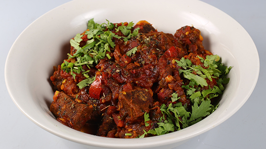

Beef Bhuna Recipe

A Bangladeshi local delicious dish - Beef Bhuna
Ingredients
- Beef slices- 2 cup
- Soyabean oil- 250 ml
- Water-500 ml
- Garam masala- 100 gram
- Beef masala- 100 gram
- Onion slices- 500 gram
- Ginger/Garlic paste-250 gram
Steps
- At first, pour water into the pressure cooker
- Mix oil, ginger/garlic paste and onion slices together and cook those in low heat
- 15 minutes later, add garam masala, beef masala and beef slices in the cooker
- Cover the cooker and cook for 1 hour
- After 1 hour, open the cover of the cooker and carefully taste one spoon of soup
- If everything seems fine and tasty then you are done cooking
- Serve and enjoy!